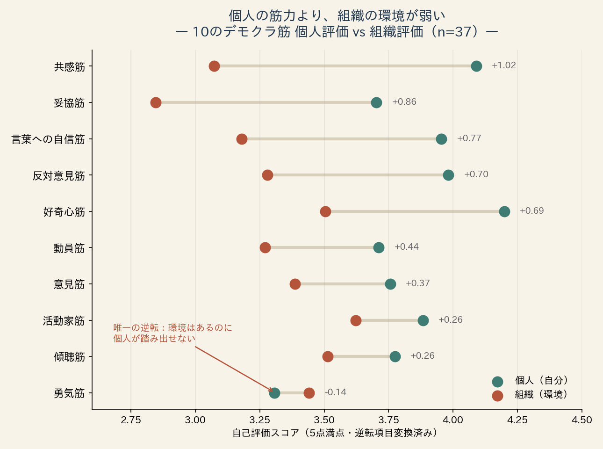
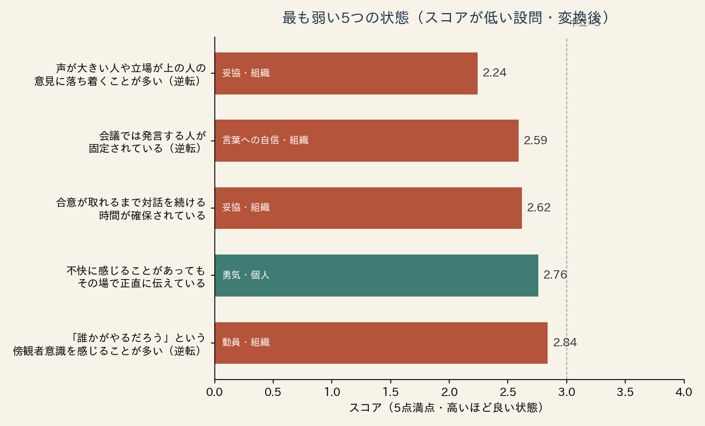

個人の筋力より、組織の環境が弱い
診断は同じ回答者に、各筋を2つのレイヤーで尋ねます。「自分自身はどうか」（個人評価）と、「自分の組織はどうか」（組織評価）。この2つを比べたとき、10筋中9筋で個人評価が組織評価を上回りました。総合スコアの差は+0.52点（個人3.84 vs 組織3.31、対応のあるt検定 p<0.000001）。回答者37人のうち29人が、自分自身より組織を低く評価しています（組織を高く評価したのはわずか3人でした）。

ギャップが最も大きいのは共感筋（個人4.09／組織3.07）と妥協筋（個人3.70／組織2.85）。つまり「相手の事情を理解しようとする気持ち」も「より良い落としどころを探す意志」も、個人の中には十分にあるのに、組織の議論の場ではそれが発揮されていない——回答者たちはそう認識しています。
これは、パフォーマンス改善の古典であるGilbertの行動工学モデル（BEM）が繰り返し示してきたこと——成果の障害の大半は個人の能力不足ではなく環境要因にある——と一致するパターンです。
唯一の逆転筋「勇気」——安全な環境があっても、踏み出せない
10筋のうち、勇気筋だけが逆のパターンを示しました。個人3.31に対して組織3.44と、唯一、組織評価が個人評価を上回った筋肉です（この差は統計的に有意ではありません）。そして全60設問の中で、個人評価の最低点はこの設問でした。
「不快に感じることがあっても、その場で正直に伝えている」— 2.76個人評価・全設問中最弱
一方で、組織側の「本音を言っても安全だと感じられる」は3.53と、相対的に悪くない水準です。環境としての安全性はある程度整っている。それでも、個人は踏み出せていない。
この観察は、組織開発の現場で広く共有されている前提——「心理的安全性を整えれば、発言は自然に増える」——に疑問を投げかけます。安全性は発言の必要条件かもしれませんが、十分条件ではない。使われない筋肉は、安全なジムの中でも育ちません。勇気筋は、環境整備ではなくトレーニングの対象である——これが本データから立ち上がる仮説です。
組織の最弱点は「話し始め」ではなく「決め方」
全設問を変換後スコアの低い順に並べると、ワースト3はすべて合意形成——「決め方」に関する組織評価に集中しました。

「声が大きい人や立場が上の人の意見に落ち着くことが多い」— 2.24妥協筋・組織評価（逆転項目・変換後）・全設問中最弱
次点は「会議では発言する人が固定されている」（2.59）、「合意が取れるまで対話を続ける時間が確保されている」（2.62）。会話は始まっている。しかし、結論は対話ではなく声量と役職で決まり、合意形成に時間が割かれていない——それが回答者たちの見ている組織の姿です。
これから検証する3つの仮説
本白書は速報版であり、まだトレーニング前後の変化データを持ちません。だからこそ、結果を見る前に仮説を宣言しておきます。2026年8月の合宿型プログラムから、受講前後（pre/post）の測定を正式に開始します。
宣言
- H1：トレーニング後、最も伸びるのは勇気筋の個人スコアである。環境は既に整いつつあるため、個人の一歩が変われば数値に直結すると予測する。
- H2：個人と組織のギャップ（+0.52）は、組織単位で受講した群でのみ縮小する。個人参加では個人スコアだけが上がり、ギャップはむしろ拡大しうる。
- H3：「声が大きい人で決まる」（2.24）は、合意形成の型を導入した組織でのみ改善する。個人の意識変化だけでは動かない。
検証結果は、外れた場合も含めて本白書の第1号（2026年末予定）で公開します。
方法と、このデータの限界
対象はデモクラ筋診断（法人版・意識版、全60問・5件法）の回答のうち、設問が安定した2026年3月21日以降で、直線回答・完全重複を除外した37件。各筋は個人3問+組織3問で測定し、逆転項目は変換（6−値）してから集計しています。個人vs組織の比較は同一回答者内の対応データとして、対応のあるt検定とWilcoxon符号順位検定の両方で確認しました。
限界（読み手に先に伝えたいこと）
サンプルの偏り：回答者はDemocracy Fitness体験会等の参加者が中心です。つまり対話への関心が高い層に偏っており、「日本の組織一般」を代表しません。
自己評価であること：測っているのは自己認識であり、行動の実測ではありません（行動実績版の蓄積は始まったばかりです）。
因果は語れない：本速報版は記述統計と仮説の提示に徹しています。n=37で断定できることは多くありません——だからこそ、仮説を宣言し、検証を続けます。